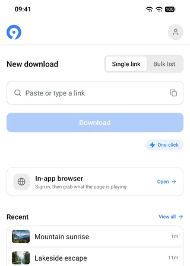
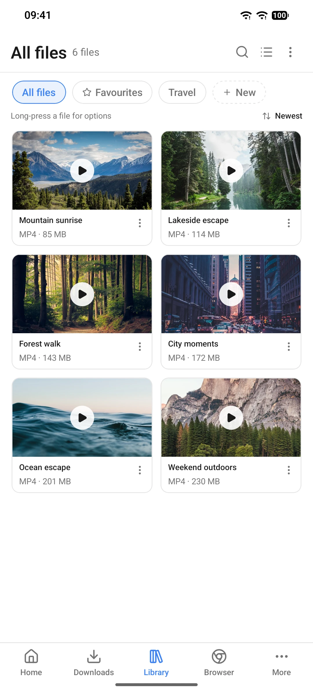

把零散视频素材收进同一条流水线：我用 9xbuddy 做周素材采集的完整工作流
每周要从 B 站、YouTube、Twitter 等七八个平台收视频做剪辑，以前分平台找工具、手动整理文件夹，现在把 9xbuddy 嵌进一条分享→批量→自动归档→电脑同步的固定流程，省下了什么、又在哪几个环节还得手动介入，这里给你一条可直接抄的作业链。
旧流程：一周 20 条素材要花 40 分钟在「搬运」上
我做科技类短视频的剪辑，每周固定要从 B 站、YouTube、Twitter、Reddit、知乎专栏等七八个平台各收一两条素材，攒够 15~25 条再集中剪。以前这条链是散的：
B 站用一个专门工具、YouTube 用另一个、Twitter 偶尔还要开浏览器扩展；每个工具的下载目录各归各，一条素材有时候分散在三个不同文件夹；批量下到一半有失败的，得每条点进去看报错、判断重连还是换链接；下完还要手动挑好的版本（同一视频被我下了三次不同分辨率是常事），拖进剪辑素材盘，再做一轮去重和重命名。
粗算下来，每周「搬运整理」这一步要 30~40 分钟，真正影响剪辑进度的不是下载本身，是每次都要重新判断怎么下、下到哪里、要不要删旧版本。
新流程：9xbuddy 作为统一入口，三步串起整条链
后来把 9xbuddy 嵌进来，作为所有平台的统一下载器——它的官网上对这款工具的定位也是多平台视频统一下载，整条链变成了：
分享菜单直接进 → 批量队列一次跑完 → 电脑端自动同步素材盘
具体怎么接：
第一步：分享菜单进 9xbuddy，告别复制粘贴
从官方下载拿的 APK 直装版（商店版不支持 YouTube，我直接绕过这个限制），所有我常逛的 App 都能从原生分享菜单直接调起 9xbuddy。YouTube 视频、B 站稿件、Twitter 推文带的视频——在原 App 里点分享、选 9xbuddy，它自动解析、弹出格式列表。
这里有个 Pro 功能叫一键下载，开了之后格式列表整个跳过，直接按我预设的偏好画质（1080p、H.264）往队列里丢。我每天要下三四条 YouTube，每次省掉选画质、点确认那四五次点按，一周下来累积能少 20 多次重复操作。一键下载照常占每日额度，但额度省下来的操作步骤就是实打实的省。

第二步：批量队列让零碎任务攒成一段连续时间
以前是想到一条下一条，现在改了习惯：上午刷到好素材、直接分享进 9xbuddy，它先排队、不下。中午休息的 20 分钟打开批量列表，把上午攒的七八条一次性勾选、开跑。
批量下载前我会手动关掉电池优化——Android 系统会在后台杀下载进程，9xbuddy文档里专门提了这个坑，踩过一次之后就成了固定检查项。关完电池优化、开队列，这时候就可以去干别的了。
队列跑完有失败的怎么办？9xbuddy 有三个恢复按钮：重试、重启、浏览器。按失败原因选，别乱点：
- 网络断了、限速了 → 点重试，从断点续传
- 提示链接过期、格式失效 → 点重启，重新解析换一条新链接
- 遇到登录墙、人机验证 → 点浏览器，在内置浏览器里登录之后用页面会话继续
这个判断口诀我贴在电脑显示器角上了，省得每次打开文档查。
第三步：从手机收藏库同步到电脑素材盘
下载完成的视频会进收藏库，支持按来源站点自动分类——B 站的归 B 站文件夹、YouTube 的归 YouTube。我在电脑端开了一个局域网 SMB 共享盘，用 ES 文件管理器每周日晚上把 9xbuddy 的收藏库整个同步过去，剪辑软件直接在电脑上读共享盘，不用再用数据线或微信传。

实操细节：两个最容易断链的环节
环节一：解析成功但列表空——不是没下到，是链接没指正主
这是我踩过最多的坑。贴一个聚合页、嵌入页、分享跳转链进去，解析不报任何错，但格式列表就是空的。原因通常有三个：媒体不在你贴的那一页上、分享链带了一堆跳转没落到正主、或者视频还没真正播放起来流地址没暴露。
解法也简单：复制规范链接（视频播放页本身那条）、用内置浏览器打开让视频播一会儿再解析、最后确认普通浏览器里这页媒体能直接播。这三步走完基本都能出结果，不行就等一两天再试——平台偶尔对刚发布的内容解析不稳定。
环节二：批量跑了一半停了——不一定是下载器的问题
批量队列跑到一半停住、任务还在显示「传输中」，常见的假故障有两个：免费额度用完了（每日额度有上限，得等第二天恢复），或者系统后台把进程杀了。前者在设置里能看额度剩余，后者就是开头说的电池优化问题，跑大队列前务必手动关一次。
效果与边界：这条链什么时候划算、什么时候不划算
划算的情况
- 每天需要从多个平台收素材、量在 5~20 条之间——9xbuddy 的分享菜单入口和批量队列能把跨平台切换的成本降到几乎为零
- 画质偏好固定（比如永远 1080p、H.264）——一键下载功能省的操作量最大
- 有定期整理素材的习惯（每周一次或每两天一次）——攒批量跑比零散下载效率高得多
不太划算的情况
- 偶尔才下一两条视频、对画质要求随内容变化很大——一键下载没用、批量也攒不起来，反而多了个要管理的工具
- 主要下 YouTube——商店版明确不支持，必须用 APK 直装版，意味着手动更新和未知来源授权，对不折腾的人来说这个成本要算进去
- 对 DRM 加密内容有期待——会员视频、私享内容、地区受限的，工具如实反映源站权限，列表空就是空，不是工具坏了
我的周度 SOP
最后把整套流程压成一句话，方便你抄：
周一到周五刷到素材 → 原生分享菜单直接进 9xbuddy 排队（一键下载自动按偏好画质）→ 每天中午开批量列表、攒够 10 条一次性跑完（跑前关电池优化）→ 周日晚上收藏库同步到电脑素材盘 → 下周剪辑直接读共享盘。
这条链搭好之后，「搬运整理」这一步从我每周固定的 40 分钟降到了 8 分钟左右——多出来的时间全用在剪辑上了。我把这套配置清单和常见坑的排查笔记也同步放在三个代码仓库里维护：GitHub 上面是主版本，国内访问慢的话可以直接去 Gitee 或 GitCode 拿，内容完全一致。